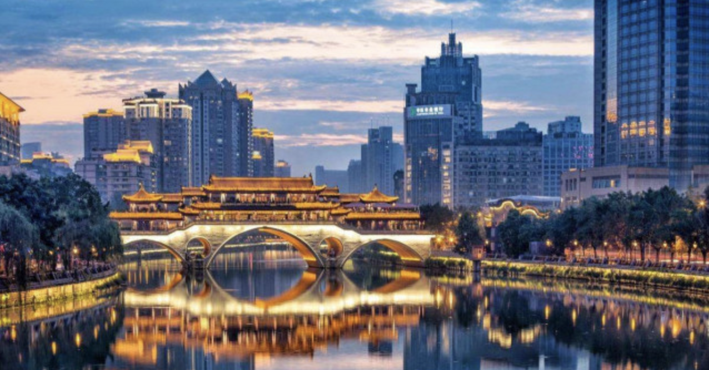
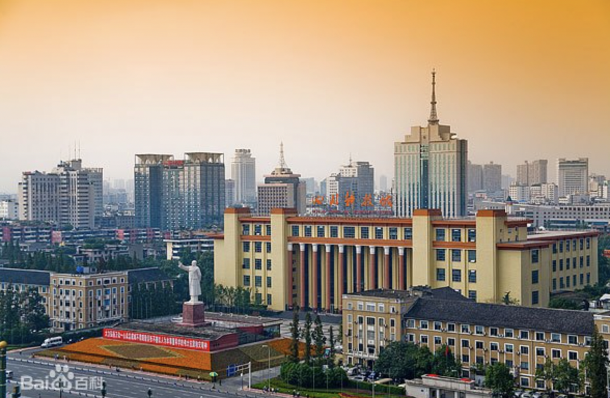
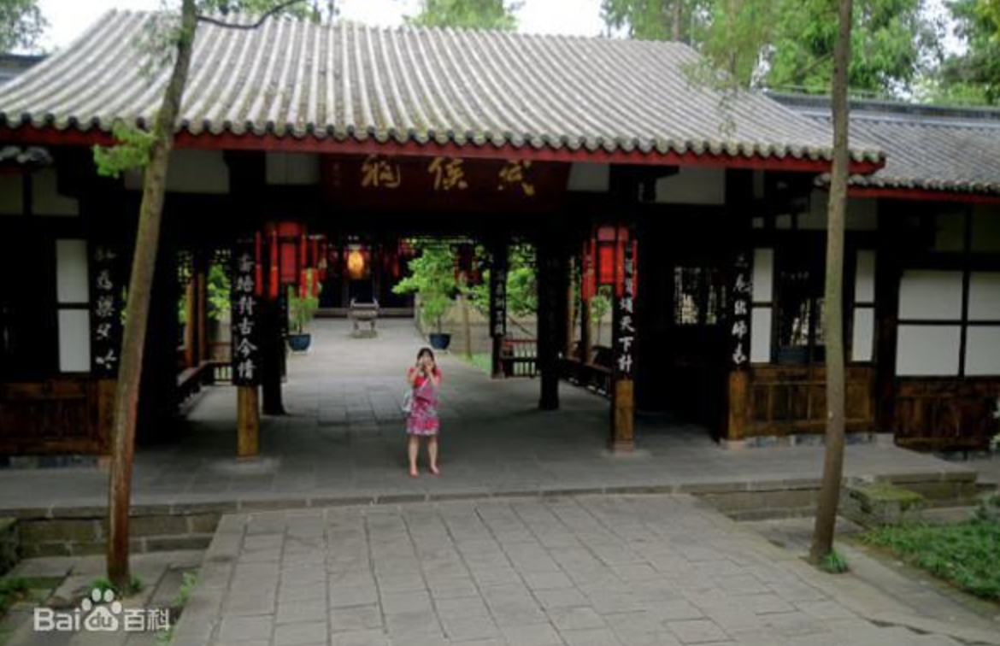
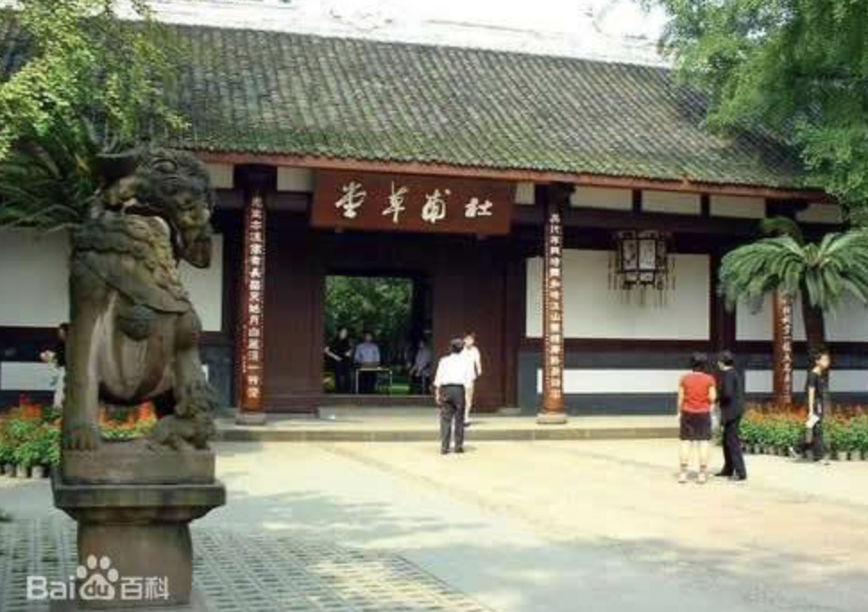
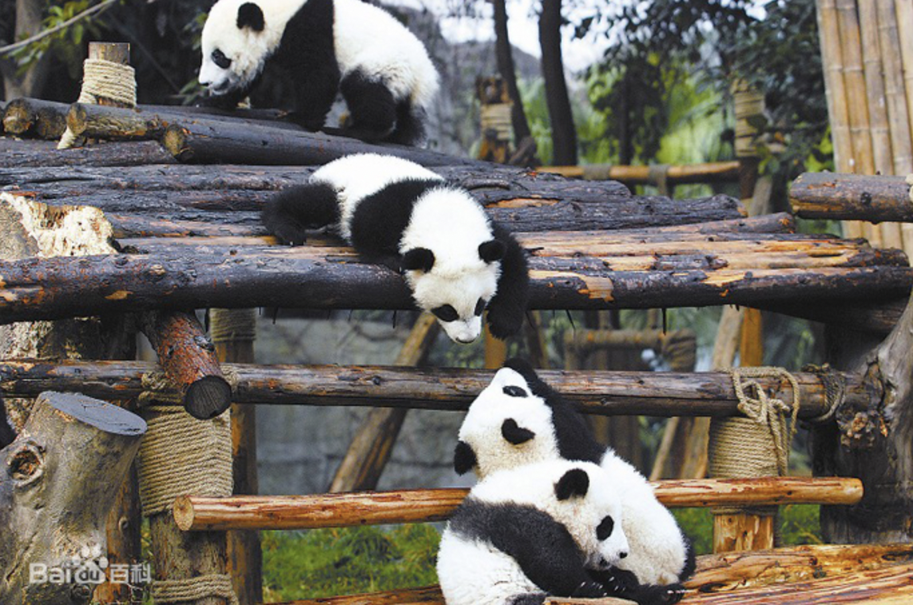
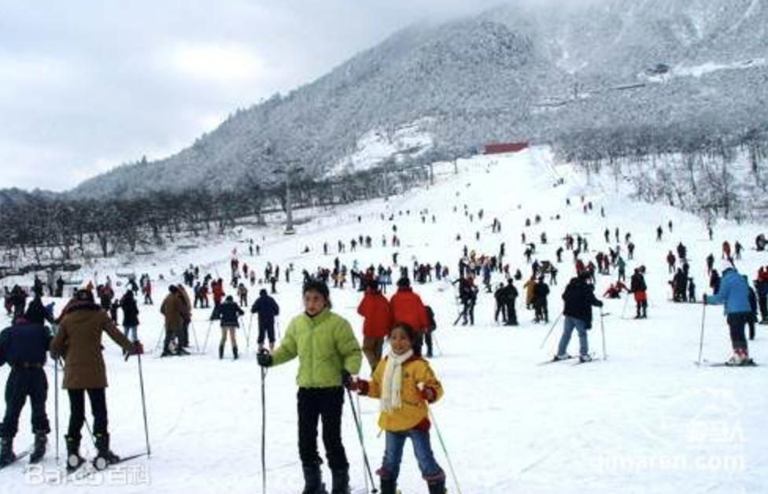
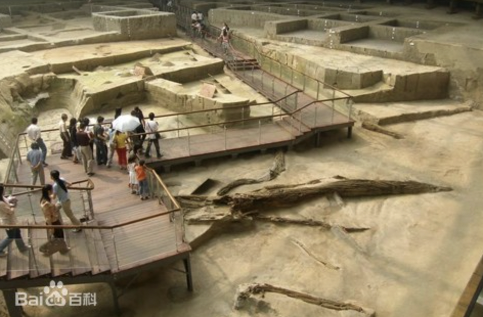
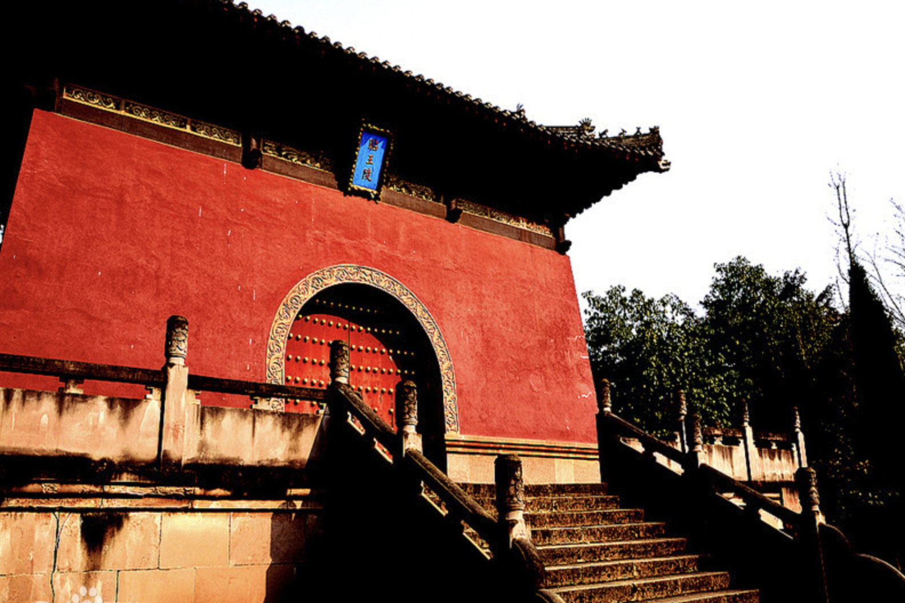
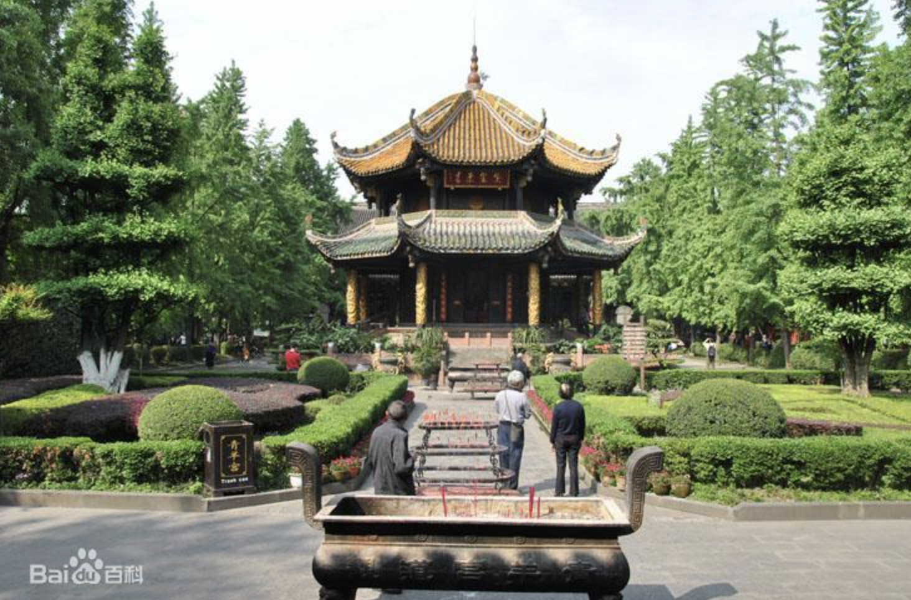
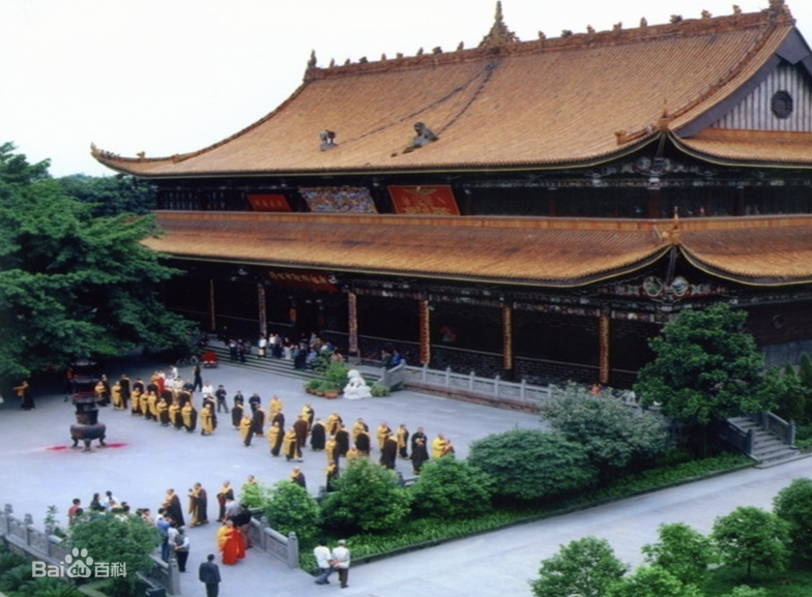

China Culture Series of Chengdu's main attractions !
Chengdu has Wuhouyu, Dufu Grass Hall, Yongling, Wangjiang Tower, Qingyang Palace, Wenshu Academy, Mingyu Wangling, Zhaoji Temple and many other historical sites and cultural landscape. Chengdu is also a giant panda habitat in Sichuan, with a giant panda base.
Main term: Ten scenes in Chengdu Chengdu New Ten Scenes
01 Dujiangyan(都江堰遗址)
Dujiangyan is located in Chengdu Dujiangyan City, irrigation town, is China's construction in ancient times and has been used so far large-scale water conservancy projects, known as the "world's water conservancy culture", is a well-known tourist destination. Dujiangyan water conservancy project was built by Taisan Li Bing and his sons in Qin Guoyi County around B.C.256 years, is the world's oldest, only remaining, with no dam water as the characteristics of the grand water conservancy project, is also a world cultural heritage.

02 Tianfu Square(天府广场)
Tianfu Square is located in the heart of Chengdu, is the people's east road, the people's west road, the people's middle road and the people's south road starting point. Its form and status are similar to that of Beijing's Tiananmen Square.
03 Wuhouyu Museum(武侯祠)
Wuhouyu Museum is well-known at home and abroad, the three cultural shrines, Wuhouyu is the country's most famous Zhu Geliang, Liu Bei Memorial And the only Junchen Temple, is the country's most affected museum of the three national relics. Wuhouyu Museum was founded in 223 years, mainly by Huiling, Han Zhaoli Temple and WuHouYu three major parts of the composition, The ancient Cypressen, elegant environment, the temple magnificent, is the first batch of national key cultural relics protection units.
04 Dufu Grass Hall(杜甫草堂)
DuFu Grass Hall is the old site of the Tang Dynasty poet Du Fu Chengdu House, located in the urban area of Chengdu. The poet Du Fu moved to Chengdu in 759, which lasted 3 years and 9 months, and wrote more than 240 poems here. The main buildings have poetry history hall, Chaimen, Ministry of Industry, Shaoling grass hall and so on. The Grass Hall Museum contains more than 30,000 copies of various historical materials and more than 2000 cultural relics, which are valuable materials for the study of "Psalm Saint" Du Fu. Dufu Grass Hall is one of the first national key cultural relics protection units.
05 Research Base for Giant Panda Breeding(大熊猫繁育研究基地)
Chengdu Research Base for Giant Panda Breeding is one of the main research bases of the Chinese government's project to protect endangered wild animals such as giant pandas, and is a national AAAA-class tourist attraction. It is a rare and endangered wildlife protection research institution in China and the world, such as giant pandas, such as scientific research and breeding, conservation education, education and tourism, and panda culture construction.
06 Xiling Snow Mountain(西岭雪山)
Xiling Snow Mountain is located in Chengdu Daxi County, only 95 kilometers from Chengdu, a total area of 375 square kilometers, is a world natural heritage, giant panda habitat, AAAA-class tourist attractions, national key scenic spots, because of the Tang Dynasty poet Du Fu's absolute sentence " Snow accumulated through thousands years on the Xiling Snow Mountains could be viewed within a glance from the window.(窗含西岭千秋雪) While ships from the Eastern-Wu State of miles away, are anchoring in the dock outside the house then.(门泊东吴万里船)" and named. Scenic area has year-round snowy mountains, the main peak Miaojiling elevation of 5353 meters, chengdu's first peak.
07 Sands ruins(金沙江遗址)
Sands ruins are located in Chengdu Qingyang Avenue, in the unearthed more than 3000 cultural relics, most of them are gold and jade jewelry and jade jewelry and a large number of burial items. The culture of the site is in line with the culture of the Three-Star Heap in Guanghan, and the link between the two is another great achievement in the history of Chinese archaeology after the Three-Star Heap. Belongs to the national key cultural relics protection unit.
08 Ming Yu Wangling(明蜀王陵)
Located on the eastern outskirts of Chengdu, the tombs of the King's Mausoleum, represented by the Tomb of the King, are beautifully carved from the buildings of the Palace. The discovery of the Ming Dynasty Wangling is of great significance for understanding the Ming Dynasty Wang's mausoleum system as well as architecture, sculpture art and so on. In 1996, the Ming Yu Wangling was announced by the State Council as the fourth batch of national key cultural relics protection units. [94]
09 Blue Sheep Palace(青羊宫)
Qingyang Palace is one of the country's famous Taoism palace views, located in Chengdu city, was founded in Tang Dynasty, still existing temple built in the Qing Dynasty. The main Chinese buildings are Lingzu Temple, Mixed Yuan Temple, Gossip Pavilion, Inpolar Temple (i.e., Sanqing Temple), Dom Temple, Tang Wang Temple, Chai Jingtai and so on. Qingyang Palace is an important place to study ancient Chinese culture and Taoism culture.
10 Zhaoji Temple(昭觉寺)
Zhaoji Temple was identified by the State Council in 1983 as a national key Buddhist monastery in the Han region, is a key Buddhist monastery in Sichuan, but also a key place of Buddhist activities in China, known as the "first Zen forest" in Sichuan West. In 1989, the Qingding Master, presided over by Zhaoyu Temple, rebuilt the Daxiong Bao Temple, the Yuantong Temple, the Zhonggu Building and the Temple of the Buddha.
